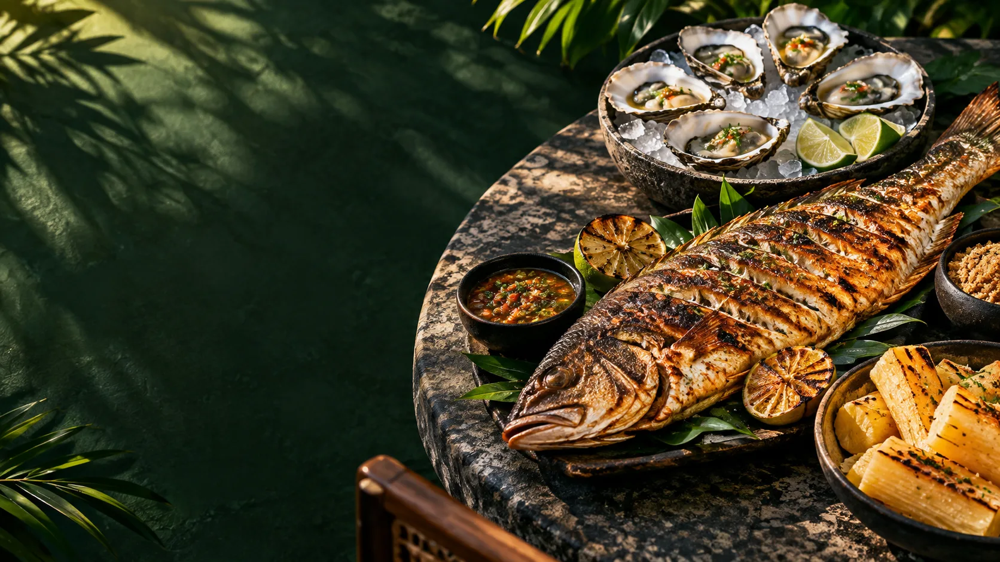
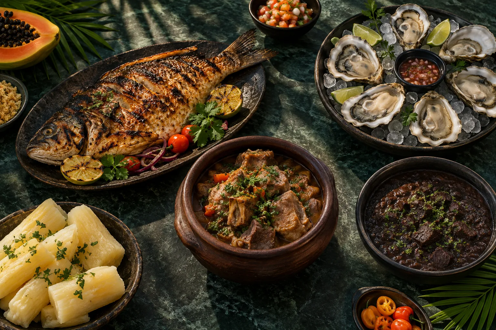

Frescas com limão
Ostras
Porção grande ou meia porção com seis unidades.
R$ 65,00 meia R$ 32,50
Lagoa Redonda, Fortaleza
Frutos do mar, comida regional e o jeito cearense de receber.
Da ostra fresca ao camarão bem temperado, cada prato aproxima o litoral, a memória e a mesa.
Pratos e valores publicados recentemente. A equipe confirma disponibilidade no dia.
Porção grande ou meia porção com seis unidades.
R$ 65,00 meia R$ 32,50Alho e óleo, com sabor direto e bem temperado.
R$ 100,00Peixes, comida regional e acompanhamentos para compartilhar.
Disponibilidade no atendimentoUma composição abundante, feita para olhar, escolher e dividir.

Selecione o que despertou seu interesse e envie a intenção à assistente. Ela coleta os detalhes para a equipe confirmar.